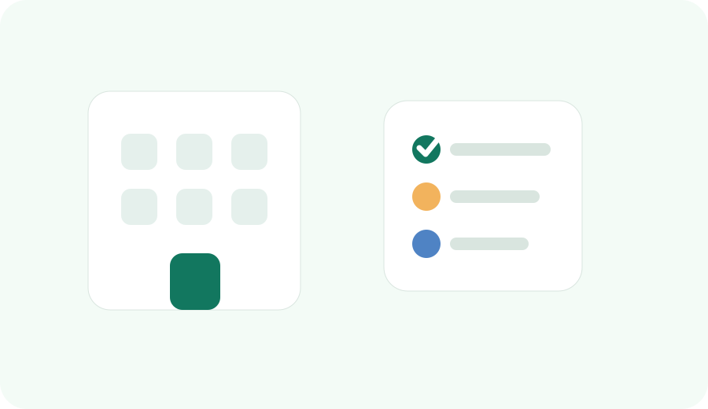

First Month Routine
운정 입주 첫 달은 동네를 넓히는 시간이 아니라, 매일 반복할 루틴을 줄이는 시간입니다.
운정으로 이사 오면 새 아파트, 학교, 병원, 장보기, 주차, 출퇴근, 주말 코스가 한꺼번에 들어옵니다. 하지만 첫 달에 모든 장소를 다 알아둘 필요는 없습니다. 가족이 반복해서 쓰는 병원, 약국, 학교, 장보기, 주차, 도서관만 먼저 안정시키면 생활 피로가 크게 줄어듭니다.
이 글은 이사 첫날 행정·생활폐기물 체크를 끝낸 뒤, 입주 첫 달 동안 실제 생활 루틴을 만드는 순서입니다.

1. 입주 첫 달은 4주로 나눠 정리합니다
전입, 쓰레기 배출, 방문차량 등록을 끝내고 소아청소년과, 이비인후과, 약국, 장보기 장소를 먼저 저장합니다.
통학로, 돌봄, 도서관, 학원가, 비 오는 날 픽업 위치를 실제 등하교 시간대에 확인합니다.
GTX, 운정역, 야당역, 버스정류장, 주차장, 평일 저녁 장보기 동선을 나눠 테스트합니다.
공원, 도서관, 실내 놀이, 가족 외식, 대형 장보기 코스를 반나절 단위로 정리합니다.
2. 병원·약국은 가까운 곳보다 “갈 수 있는 시간”을 먼저 봅니다
이사 직후에는 가족이 피곤하고 아이가 감기나 열로 아플 가능성이 커집니다. 병원은 지도상 거리보다 접수 마감, 소아 진료 가능 여부, 약국 거리, 주차 가능성, 야간·휴일 대체 경로가 더 중요합니다.
| 저장할 곳 | 확인 기준 | 왜 필요한가 | 연결 페이지 |
|---|---|---|---|
| 소아청소년과 2곳 | 접수 마감, 대기, 주차, 약국 거리 | 첫 방문 병원이 마감됐을 때 대체가 필요합니다. | 소아과 확인 |
| 이비인후과 1~2곳 | 아이 진료 가능 여부, 감기·귀 통증 대응 | 감기, 중이염, 코막힘은 입주 초기에 자주 생깁니다. | 이비인후과 체크 |
| 약국 2곳 | 평일 저녁, 주말, 병원 옆 약국 | 처방전 조제와 일반 상비약 구매 동선이 다릅니다. | 주말 약국 |
| 야간·휴일 확인 경로 | E-Gen, 휴일지킴이약국, 119 상담 | 밤에 아이가 아플 때 검색 시간을 줄입니다. | 밤에 아이 열날 때 |
3. 아이 있는 집은 학교명보다 “마지막 10분”을 봐야 합니다
통학구역과 학교 배정은 공식 안내를 기준으로 확인해야 하지만, 실제 생활에서는 마지막 10분이 더 중요합니다. 횡단보도, 차량 진출입구, 비 오는 날 정차 위치, 학원 후 귀가 길, 도서관에서 집까지의 마지막 보행 구간을 확인하세요.
- 평일 아침 등교 시간에 실제 통학로를 한 번 걸어봅니다.
- 비 오는 날 우산을 쓰고도 안전한 횡단보도와 실내 대기 장소를 확인합니다.
- 방과후 돌봄, 학원, 도서관, 병원까지 이어지는 동선을 따로 저장합니다.
- 부모 픽업 위치는 학교 정문보다 안전하게 정차할 수 있는 곳을 우선합니다.
- 운정3지구 입주 가족은 신설학교와 통학구역 변동 공지를 주기적으로 확인합니다.
입주 가족이 통학구역, 전입학, 신설학교 예정 정보를 공식 자료 기준으로 보는 순서입니다.
학교명보다 횡단보도, 차량 진출입구, 도서관, 병원 접근성을 봅니다.
하교 후 독서, 간식, 귀가 시간을 한 흐름으로 잡습니다.
4. 장보기는 도보·차량·주말 대량 구매를 분리합니다
처음 한 달 동안 장보기 장소를 하나만 정하면 오히려 피곤해질 수 있습니다. 평일 저녁 도보 장보기, 차량으로 들르는 중형 마트, 주말 대량 장보기를 나눠두면 늦은 저녁에도 선택지가 생깁니다.
| 장보기 유형 | 저장 기준 | 확인할 것 | 운정 생활 팁 |
|---|---|---|---|
| 도보 장보기 | 편의점, 소형마트, 문구점 | 영업시간, 아이 동반 이동, 우천 동선 | 평일 저녁 급한 준비물과 간식용입니다. |
| 차량 장보기 | 주차가 쉬운 마트와 상가 | 출입구, 카트 이동, 출차 혼잡 | 퇴근길에 들를 곳과 주말에 갈 곳을 나눕니다. |
| 생활 서비스 | 세탁소, 문구점, 수선, 생활수리 | 도보 가능 여부, 주차, 접수 마감 | 입주 첫 달에는 작은 생활 서비스가 자주 필요합니다. |
| 가족 외식 | 아이 좌석, 대기, 메뉴, 주차 | 저녁 혼잡, 대체 주차, 포장 가능 여부 | 이사 정리 중에는 외식·포장 루틴이 현실적입니다. |
5. 생활권별 첫 달 체크 포인트
| 생활권 | 첫 달 우선순위 | 주의할 점 | 같이 볼 글 |
|---|---|---|---|
| 운정역·GTX권 | 출퇴근 환승, 주차, 버스정류장, 도서관 | 환승은 열차 시간보다 집에서 승강장까지의 전체 시간이 중요합니다. | GTX 환승·주차 |
| 야당역권 | 저녁 외식, 병원·약국, 상가 주차 | 저녁 시간대 차량과 보행 혼잡을 확인합니다. | 야당역 생활권 |
| 산내·해솔권 | 학교, 학원, 도서관, 소아과 | 하교 후 학원·도서관·귀가 마지막 구간을 봅니다. | 산내·해솔 생활권 |
| 교하·동패권 | 차량 이동, 공원, 대형시설, 주말 장보기 | 차량 이동이 편한 대신 주말 동선은 미리 나눠야 합니다. | 교하·동패 생활권 |
| 운정3지구 | 신설학교, 공사 구간, GTX 접근, 신규 상권 | 운영 정보가 자주 바뀔 수 있어 공식 공지를 같이 봅니다. | 운정3지구 학교 |
6. 첫 달이 지나기 전에 만들어둘 가족 기본 지도
소아과, 이비인후과, 약국, 야간 확인 경로, 응급실을 따로 저장합니다.
학교, 돌봄, 학원, 도서관, 비 오는 날 픽업 위치를 저장합니다.
도보 장보기, 차량 장보기, 주말 대량 장보기, 세탁·문구·수선을 나눕니다.
공원, 도서관, 실내 놀이, 가족 외식, 주차 편한 코스를 묶어둡니다.
자주 묻는 질문
입주 첫 달에 병원은 몇 곳 정도 저장하면 좋나요?
소아청소년과 2곳, 이비인후과 1~2곳, 약국 2곳, 야간·휴일 확인 경로 1개를 저장하면 기본 대응이 가능합니다.
학교 배정과 통학로는 어디서 확인하나요?
학교 배정과 통학구역은 파주교육지원청과 학교 공지를 기준으로 확인하고, 실제 통학로는 평일 아침 시간대에 직접 걸어보는 것이 좋습니다.
장보기 장소는 가까운 곳 하나만 정하면 안 되나요?
도보, 차량, 주말 대량 구매 목적이 달라 하나만 정하면 불편합니다. 평일 저녁과 주말 목적지를 분리하는 것이 좋습니다.
첫 달에 주말 코스까지 정해야 하나요?
멀리 갈 필요는 없습니다. 가까운 공원, 도서관, 실내 놀이, 가족 외식 장소를 반나절 코스로 하나씩 저장하는 정도면 충분합니다.
공식 출처
- 정부24 - 전입신고, 주민등록, 가족관계 등 민원 확인
- 파주시청 - 생활 행정, 공공시설, 보건·복지 안내
- 경기도파주교육지원청 - 학교, 전학, 통학구역 관련 공지 확인
- 응급의료포털 E-Gen - 야간·휴일 병원·약국 확인
- 파주시도서관 - 도서관 위치, 프로그램, 운영 정보 확인
- 파주시 통합주차포털 - 공영주차장과 주차 정보 확인